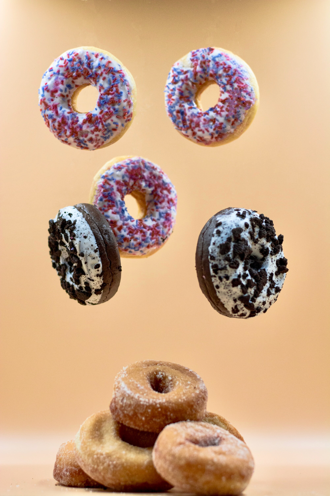
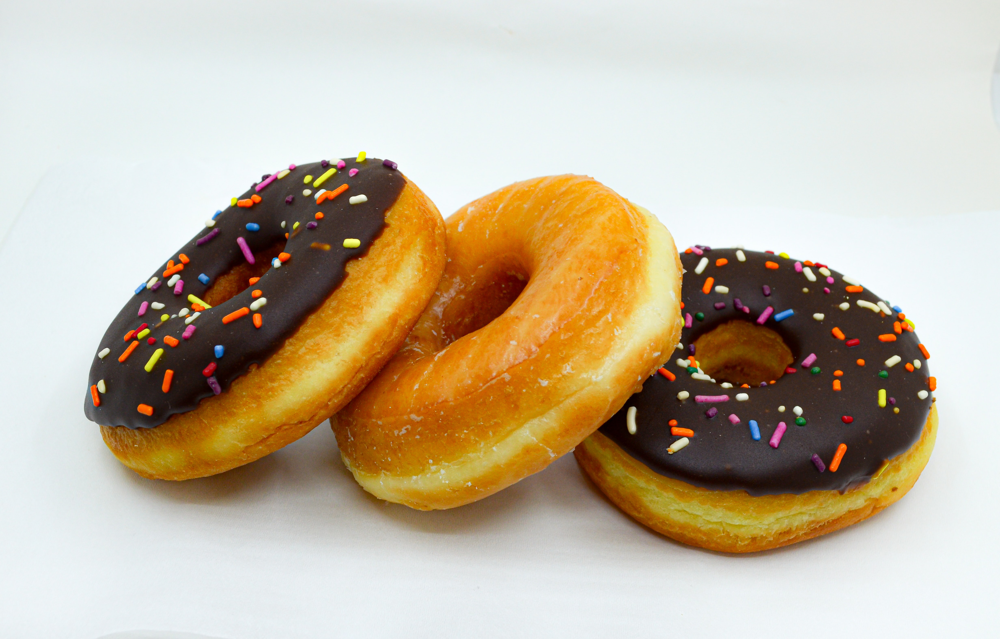
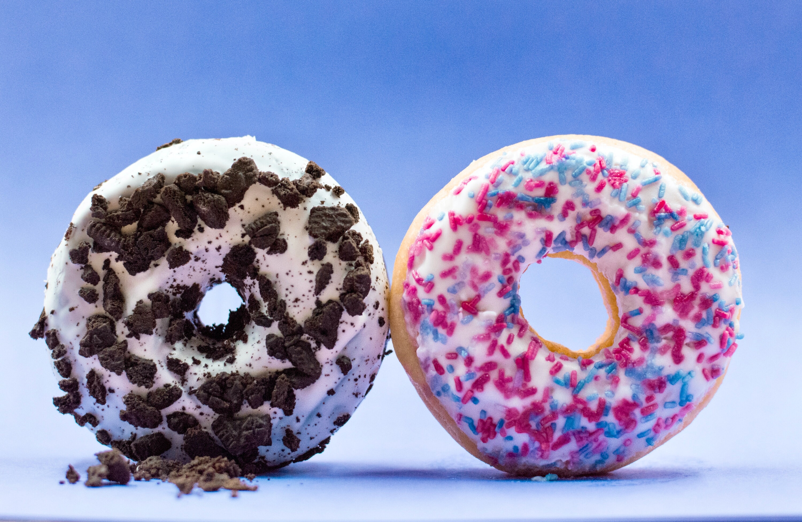

Rose's Doughtnut Recipe


Methods
Doughtnuts
- Combine milk, yeast and castor sugar in large
mixing bowl.
- Set aside for 5-10 minutes in a warm place
such as above the oven until frothy.
- Add Stork Bake, egg, vanilla essence, salt
and 2 cups of flour. Beat with flat beater attachment
until well combined.
- Switch to dough hook and add additonal 2 and half
cups of flour. If dough is still sticky, add remaining
half cup of flour. Dough is ready when it pulls away from
the sides of the bowl and it is not sticky to touch.
- Place dough into lightly oiled bowl, and turn the dough
over to fully cover the bowl with a clean dish towel and place
in a warm place.
- Let the dough rise until it has doubled in size, about
two hours.
- Pour dough onto floured surface and punch down. Knead
dough into smooth ball.
- Roll dough to 1.5cm inch thick. Cut out circles with a
7.5cm cookie cutter, and holes with 2.5cm cookie cutter
- Roll excess dough into a ball and roll again for additional
doughnuts.
- Preheat oven 200C
- Place doughnuts onto a greased baking tray and place in a
warm place until doubled in size. Bake doughnuts for 7-9 minutes
, until golden brown.
Topping
- While doughnuts are baking, melt remaining margarine and
mix castor sugar and cinnamon together in a separate bowl
- Remove doughnuts from the oven and using tongs carefully
dip each one into the melted margarine and roll around to fully
coat. Then place in cinnamon sugar and roll around to fully coat.

Ingredients
Doughnuts

- 10g sachet instant yeast
- 250ml warm full cream milk (about 35c)
- 1 egg
- a quarter cup of castor sugar
- 120g Stork bake, cut into pieces
- 5ml salt
- 10ml vanilla essence
- 4-5 cups of cake flour
Cinnamon Sugar Topping
- 120g stork bake, melted
- 250ml castor sugar
- 15ml Robertsons Cinnamon